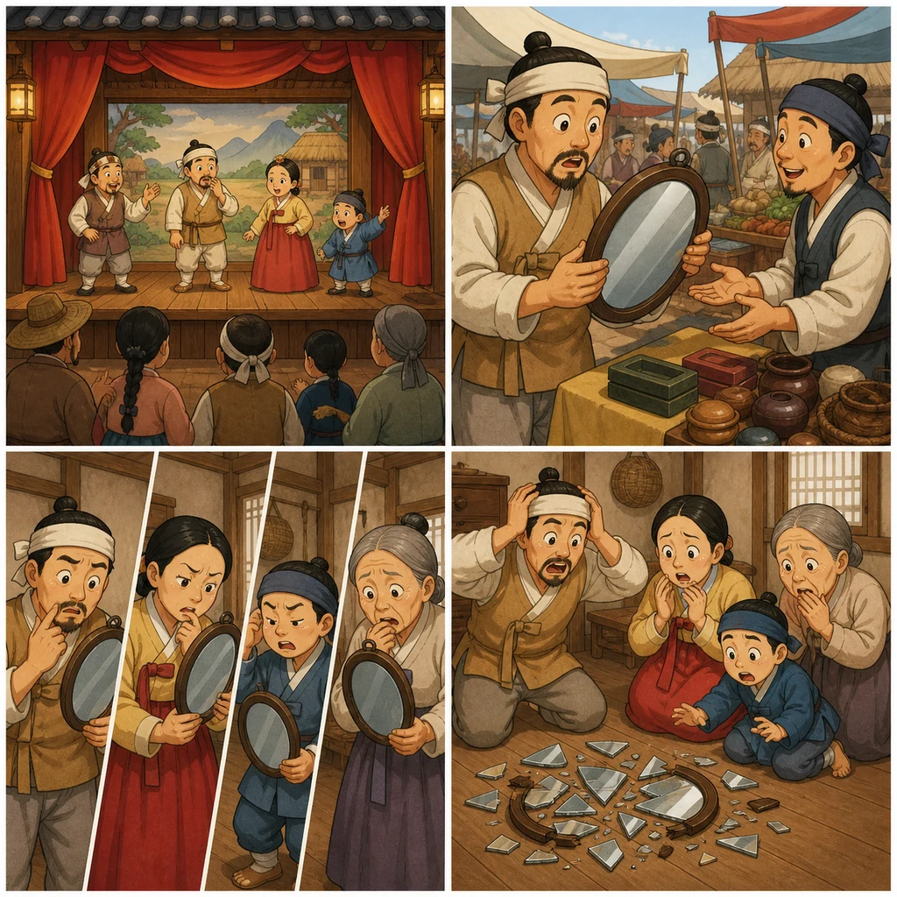

연극·무대·행동 표현
연극 준비와 공연 장면을 말할 때 필요한 단어를 카드, 검색, 퀴즈로 확인합니다.
Chapter 18
옛이야기 형식의 연극 대본을 읽고 역할극을 합니다. 연극·무대·대본·대사 어휘를 익히고, `-다니까(요)` 계열과 `V-고 말다`로 강조와 아쉬운 결과를 표현합니다.

-다니까(요) và V-고 말다.Vocabulary
연극 준비와 공연 장면을 말할 때 필요한 단어를 카드, 검색, 퀴즈로 확인합니다.
Grammar
상대가 잘 못 믿거나 다시 확인해야 하는 내용을 다시 말하며 강조합니다.
결국 그렇게 되어 버린 결과, 특히 아쉽거나 원하지 않은 일을 말합니다.
Listening · Speaking · Reading
Track 88의 질문 흐름에 맞춰 좌석, 연극에 대해 들은 이야기, 감상 예측을 확인합니다.
농부, 아내, 부모, 가게 주인의 오해가 이어지는 대본을 요약해 읽고 역할극으로 말합니다.
Review
확인된 범위만 사용해 16문항으로 빠르게 점검합니다.
18과 원본 PDF 18_lesson_18.pdf를 OCR로 확인해 단원 제목, 학습 목표, 어휘, 문법, Track 88 질문, 대본 역할극 흐름을 반영했습니다.
원문 전체 대본은 저작권 안전을 위해 그대로 옮기지 않고 요약·활동형 문장으로 구성했습니다. 음원 파일이 들어오면 듣기 페이지에 바로 연결할 수 있습니다.